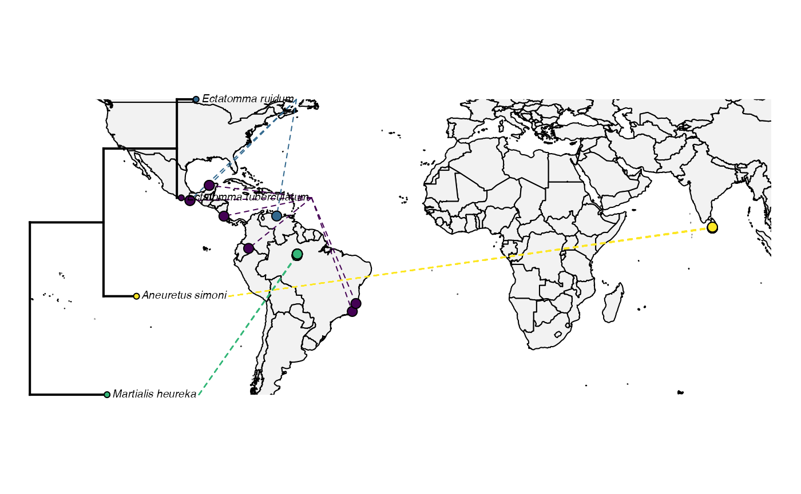

MappingAndTidyverse.RmdYou’ve seen R. We’re going to start off today by introducing Tidyverse, which is fast becoming a dominant force in data science related fields. We’re going to play a bit with some map-making, then move on to working with some real data from a Lagniappe lab.
We will work with two packages today. One is RGBIF, an interface to GBIF data maintained by the ROpenSci group.
install.packages("tidyverse")
install.packages("rgbif")
install.packages("leaflet")Later in this lesson, we will also use the rotl package
we’ve seen last week.
## ── Attaching core tidyverse packages ──────────────────────── tidyverse 2.0.0 ──
## ✔ dplyr 1.1.3 ✔ readr 2.1.4
## ✔ forcats 1.0.0 ✔ stringr 1.5.0
## ✔ ggplot2 3.4.4 ✔ tibble 3.2.1
## ✔ lubridate 1.9.3 ✔ tidyr 1.3.0
## ✔ purrr 1.0.2
## ── Conflicts ────────────────────────────────────────── tidyverse_conflicts() ──
## ✖ dplyr::filter() masks stats::filter()
## ✖ dplyr::lag() masks stats::lag()
## ℹ Use the conflicted package (<http://conflicted.r-lib.org/>) to force all conflicts to become errorsFirst, we’re going to try an example for one ant. We will query locality data and map it in a few ways. Then, you will figure out how to make the process of mapping data iterable over a set of taxa.
name_suggest("Atta mexicana")## Records returned [1]
## No. unique hierarchies [0]
## Args [q=Atta mexicana, limit=100, fields1=key, fields2=canonicalName,
## fields3=rank]
## # A tibble: 1 × 3
## key canonicalName rank
## <int> <chr> <chr>
## 1 5035745 Atta mexicana SPECIESNext, we’re going to use occ_search to search the GBIF
database for where these things are occurring.
occurences <- occ_search(taxonKey = 5035745, limit = 20)Next, we will filter the resultant dataset to name and lat and longitude data.
no_na <- occurences$data %>%
select(scientificName, decimalLatitude, decimalLongitude) %>%
drop_na()And finally, we will plot the data using leaflet
k <- leaflet::leaflet(no_na) %>%
addTiles() %>%
addMarkers(~decimalLongitude, ~decimalLatitude, popup = no_na$scientificName)
kThis looks much like plotting with ggplot and tidyverse.
That’s because leaflet is based on the same principles. We establish a
canvas and the data in the first line, then we add tiles (the actual map
we will use), and then we add our points. When we think about it, this
is quite similar to establishing a ggplot canvas, the axes, and the
points to plot.
One point is easy. How often do we only want one point, though? Probably, we will want to plot several species. First, with a partner, work out how to get GBIF ids for a set of taxa.
ants <- c("Martialis", "Atta", "Ectatomma", "Tatuidris", "Aneuretus", "Xymmer")Now, we will get the actual specimen occurrences for these ants. Practice using an apply function to do this. Inspect the object you’ve queried when you’ve completed your loop. Have we dealt with an object like this before?
search_results <- list()
for (ant in ants){
query <- name_suggest(ant, rank = "genus")
search <- occ_search(taxonKey = query$data$key, limit = 10)
search_results[[ant]]<- search$data
}This is a vector or dataframes. Each individual query made it’s own dataframe. For simplicity, lets combine them into one dataframe object.
#Combine the resultant dataframes into one large dataframe
mega_df <- bind_rows(search_results, .id = "column_label")Since we will be plotting these with a map, we need complete data in both columns - lat and long. Let’s drop any columns without data in both.
#Drop rows with NA values in the lat and long
no_na <- mega_df %>%
select(scientificName, decimalLatitude, decimalLongitude) %>%
drop_na()Now let’s take a peek at our results!
# Plot the dataframe of observations
k <- leaflet::leaflet(no_na) %>%
addTiles() %>%
addMarkers(~decimalLongitude, ~decimalLatitude, popup = no_na$scientificName)Below are six code snippets to do different types of map-based plotting. With a partner, discuss what you think would be interesting or important to view in these data. Choose a block of code to modify to accomplish your visualization. We will reconvene in about 30 minutes and do a Round Robin showing everyone’s maps. Have Fun!
leaflet(no_na) %>%
addTiles() %>%
addCircles(~decimalLongitude, ~decimalLatitude)
leaflet(no_na) %>%
addTiles() %>%
addMarkers(~decimalLongitude, ~decimalLatitude, clusterOptions = markerClusterOptions())
pal <- colorBin(
palette = "Blues",
no_na$scientificName,
pretty = TRUE)## Warning in pretty.default(domain %||% x, n = bins): NAs introduced by coercion
levs <- factor(no_na$scientificName)
factpal <- colorFactor(topo.colors(5), levs)
no_na %>%
group_by(scientificName) %>%
leaflet() %>%
addTiles() %>%
addCircleMarkers(
~decimalLongitude,
~decimalLatitude,
color = ~factpal(scientificName),
stroke = FALSE, fillOpacity = 0.5
)
pal <- colorBin(
palette = "Blues",
no_na$scientificName,
pretty = TRUE)## Warning in pretty.default(domain %||% x, n = bins): NAs introduced by coercion
levs <- factor(no_na$scientificName)
factpal <- colorFactor(topo.colors(5), levs)
no_na %>%
group_by(scientificName) %>%
leaflet() %>%
addTiles() %>%
addCircleMarkers(
~decimalLongitude,
~decimalLatitude,
color = ~factpal(scientificName),
stroke = FALSE, fillOpacity = 0.5
) %>%
setView( lng = -100,
lat = 20,
zoom = 11 ) %>%
setMaxBounds( lng1 = -100,
lat1 = 19.432241,
lng2 = -98,
lat2 = 20 )We will need one package we haven’t used yet, Liam Revell’s Phytools.
devtools::install_github("liamrevell/phytools")## Skipping install of 'phytools' from a github remote, the SHA1 (63c07a99) has not changed since last install.
## Use `force = TRUE` to force installation## Loading required package: ape##
## Attaching package: 'ape'## The following object is masked from 'package:dplyr':
##
## where## Loading required package: maps##
## Attaching package: 'maps'## The following object is masked from 'package:purrr':
##
## mapPlotting a phylogeny to a map is a fairly simple task, but has a lot of data preparation work involved. The basic steps look like this:
You may have noticed that the GBIF package includes citation
information in the scientificName column. We will need to remove that.
To do this, let’s try the strsplit function. This function
splits a character string on a defined character and returns a vector of
the elements in that character string.
For example:
my_string = "This is my string"
split_up <- strsplit(my_string, " ")
split_up## [[1]]
## [1] "This" "is" "my" "string"Try indexing this object. What do you need to do to access data? Now,
with a partner, make this iterable across every row in the
scientificName column. Then, unite the split objects into
one new column called genusSpecies.
split_names <- no_na %>%
mutate(genus = map_chr(scientificName, function(s) strsplit(s, " ")[[1]][1]))%>% mutate(species = map_chr(scientificName, function(s) strsplit(s, " ")[[1]][2])) %>%
unite(col = genusSpecies, genus, species)If you look at the data, there are some obviously mistaken values in there. For example, BOLD is not an ant species. Let’s drop that.
# Use ROTL to resolve names
no_bold <- split_names[ grep("BOLD", split_names$genusSpecies, invert = TRUE) , ]We also ended up with far more ant taxa than I thought. What a nice problem to have! But let’s filter down to, say, five of them:
a_couple_ants <- c("Martialis_heureka", "Ectatomma_ruidum", "Ectatomma_tuberculatum", "Aneuretus_simoni", "Ectatomma_opaciventre")
subset_data <- no_bold %>%
filter(genusSpecies %in% a_couple_ants)Now, let’s use ROTL to make sure we don’t have spelling errors.
reconciled_names <- rotl::tnrs_match_names(unique(subset_data$genusSpecies))
good_names <- reconciled_names %>%
drop_na()Now, we will query our tree from OpenTree.
tree <- rotl::tol_induced_subtree(good_names$ott_id, label="name")##
Progress [----------------------------------] 0/14 ( 0) ?s
Progress [================================] 14/14 (100) 0s
## Warning in collapse_singles(tr, show_progress): Dropping singleton nodes with
## labels: mrcaott1682ott35311, mrcaott1682ott17752, mrcaott1682ott7438,
## mrcaott1682ott34821, mrcaott34821ott950983, Aneuretinae, Aneuretus,
## mrcaott4706ott5525, mrcaott5525ott48019, mrcaott48019ott688185, Ectatomminae,
## mrcaott48019ott162057, Martialinae, Martialis
plot(tree)Now, we must combine our GBIF data and our taxon names into a matrix, a two-dimensional data structure with fewer neat data parsing features than a dataframe or tibble. These structures are often preferred when speed is an issue. Matrices can only be one type, which means we must add the row names after generating the object.
only_lat_long <- subset_data %>%
select(decimalLatitude, decimalLongitude) %>%
as.matrix()
rownames(only_lat_long) <- subset_data$genusSpeciesLastly, let’s pick some colors for each species:
## Loading required package: viridisLite##
## Attaching package: 'viridis'## The following object is masked from 'package:maps':
##
## unempAnd the big reveal! Let’s overlay our OpenTree with our map:
obj<-phylo.to.map(tree,only_lat_long, plot=FALSE, direction="rightwards")
plot(obj)Oh no! What has gone wrong?
This tree has several quirks. Have a look at the object and see if you can spot them.
#Answer here
- No branch lengths
- Not fully bifurcating
First, let’s resolve the polytomy issue. We will do this using Ape’s
multi2di function, which arbitrarily resolves polytomies.
In real life, you would probably want to think about this a little
more.:
We’ll also need to add some branch lengths. In our case, we will draw them from an exponential distribution. The exponential is often assumed to be a reasonable approximation for banch lengths - you’ll hear more about this if you take my systematics lab ;)
In our case, we will use rexp to make the draws, and we
will map them to a new attribute edge.length that is a
standard attribute of the tree object. In reality, you would likely not
want to do this for a publication quality analysis, and would want to
estimate branch lengths from data. But being able to rescale branch
lengths is a good skill for sensitivity and other similar analyses.
tree$edge.length <- rexp(tree$Nnode*2)
tree$edge.length## [1] 1.1509978 2.3579962 2.4775217 0.5329888 0.4722566 0.6764926Now let’s try that map again.
plot_object <- phylo.to.map(tree, only_lat_long, plot=FALSE)## objective: 6## objective: 2
## objective: 2
plot_object## Object of class "phylo.to.map" containing:
##
## (1) A phylogenetic tree with 4 tips and 3 internal nodes.
##
## (2) A geographic map with range:
## -85.19N, 83.6N
## -180W, 180W.
##
## (3) A table containing 27 geographic coordinates (may include
## more than one set per species).
##
## If optimized, tree nodes have been rotated to maximize alignment
## with the map when the tree is plotted in a downwards direction.Finally, we will actually plot to space.
plot(plot_object,direction="rightwards",colors=color_selection, cex.points=c(0,1), lwd=c(3,1), ftype="off")## "phylo.to.map" direction is "downwards" but plot direction has been given as "rightwards".
## Re-optimizing object....## objective: 4
## objective: 4## objective: 2